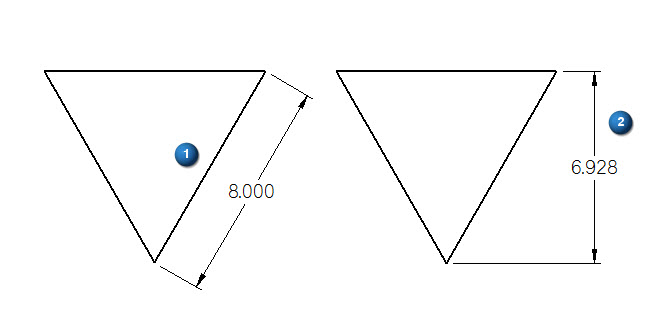
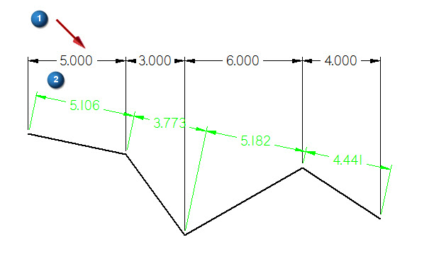

Change the orientation of a dimension
You can change the default, automatic orientation of a linear dimension placed with the Smart Dimension command and Distance Between command.
Change the orientation of a dimension
-
Choose Home tab→Dimension group→Smart Dimension command and select a line (1).
A dimension will display dynamically parallel to the line you selected.
-
Select another orientation type from the orientation list, such as Horizontal/Vertical.
The dimension now aligns with the vertical axis (2).
Example:A linear smart dimension placed using the Horizontal/Vertical orientation:

Tip:The PromptBar displays the key you can use to change the orientation, and the status bar at the bottom of the application window displays the current orientation.
-
To change the orientation during edit do the following:
-
Select the dimension
-
Choose another orientation from the list on the menu.
-
Apply orientation to a dimension group
-
Select any of the dimensions that belong to the group you want to edit (1).
-
Select the By 2 Points orientation (2).
All the dimensions of the group move to the new orientation.
A linear dimension group using the By 2 Points orientation:

How do I
Edit a 2D dimension (sketch, profile, draft)Move a dimension
Display a half dimension
Set terminator size and shape
Change dimension behavior
Break a dimension projection line
Remove breaks from a dimension projection line
Change the parent of a dimension by dragging it
Reattach a dimension or annotation using the Attach Dimension command
Add and remove jogs on a dimension
Activate a part for dimensioning in a draft quality view
Learn more
Dimension edit handlesSnap indicators for dimensions
Look up more details
Attach Dimension commandAdd Projection Line Break command
Remove Projection Line Break command
Activate Part command